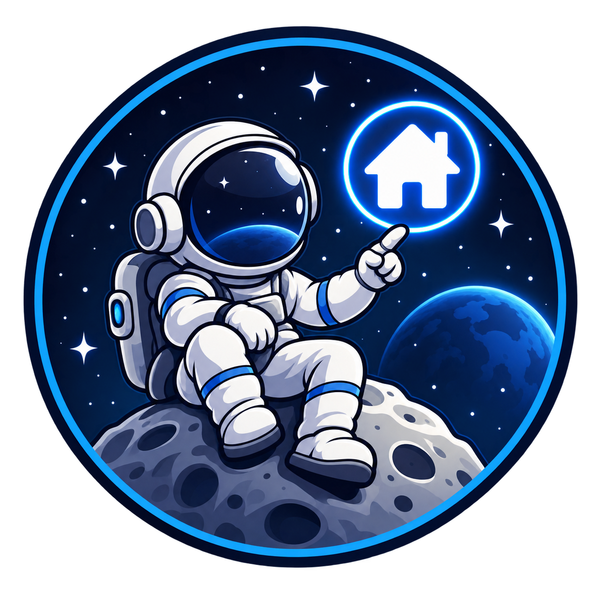
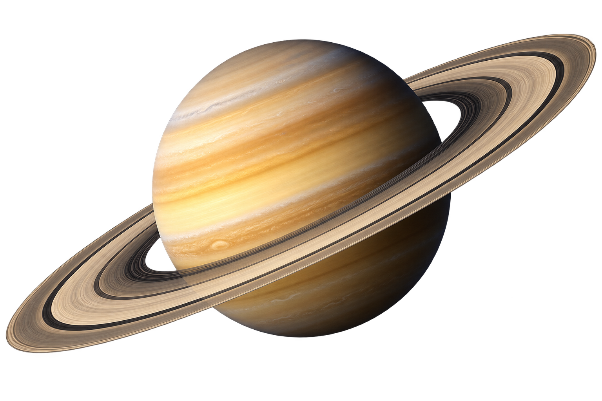
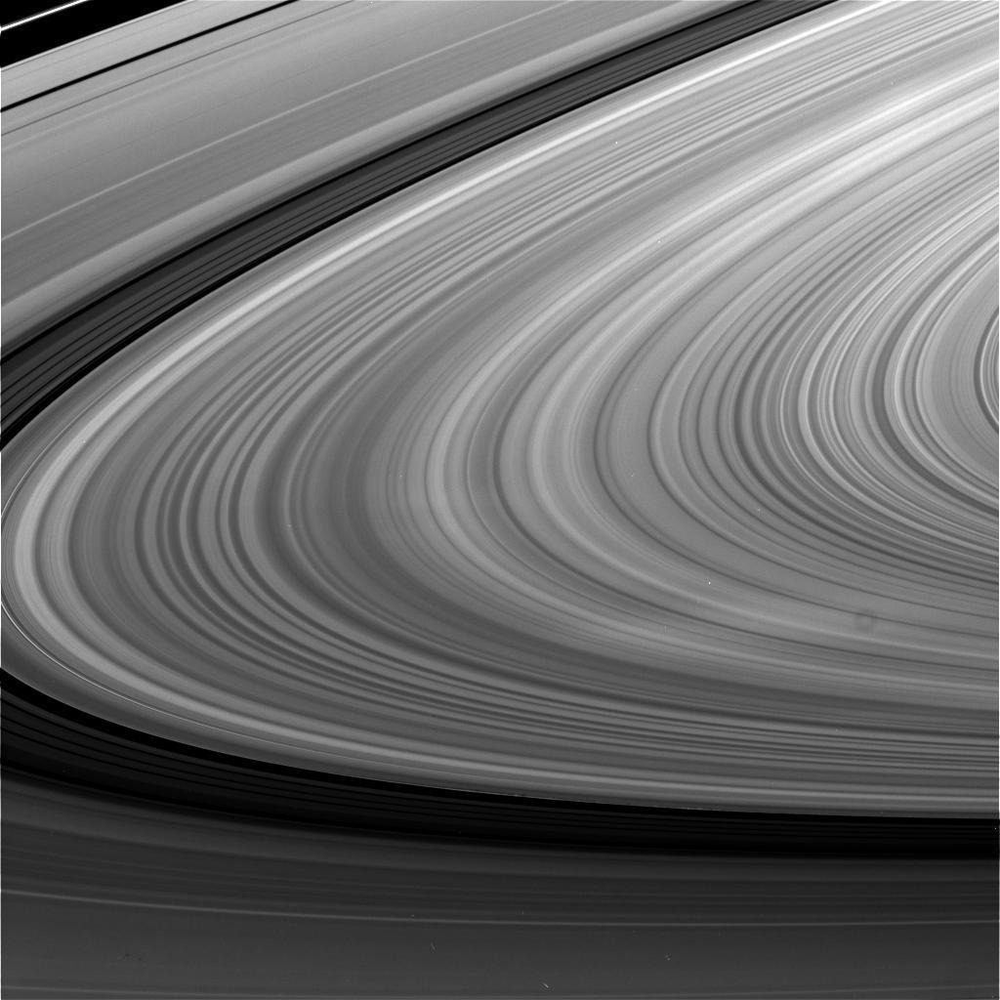

Like fellow gas giant Jupiter, Saturn is a massive ball made mostly of hydrogen and helium. Saturn is not the only planet to have rings, but none are as spectacular or as complex as Saturn's. Saturn also has dozens of moons.
With an equatorial diameter of about 74,897 miles (120,500 kilometers), Saturn is 9 times wider than Earth. If Earth were the size of a nickel, Saturn would be about as big as a volleyball.
From an average distance of 886 million miles (1.43 billion kilometers), Saturn is 9.5 astronomical units away from the Sun. One astronomical unit (abbreviated as AU), is the distance from the Sun to Earth. From this distance, it takes sunlight 79 minutes to travel from the Sun to Saturn.
One day on Saturn takes about 10.7 hours. Saturn makes a complete orbit around the Sun in about 29.5 Earth years.
Saturn has a slight tilt in its axis, but not as extreme as some other planets, so it doesn't have dramatic seasons.
Saturn is a gas giant, so it does not have a solid surface like the terrestrial planets. Instead, its atmosphere gradually becomes denser toward the center, where it transitions into a liquid state. The composition of Saturn is similar to that of Jupiter - mostly hydrogen and helium. Deep in the atmosphere, pressure and temperature increase, compressing the hydrogen gas into a liquid.
Saturn has a solid core of heavier elements, but it is surrounded by a thick layer of liquid metallic hydrogen. The outermost layer is made of molecular hydrogen and helium. The planet's atmosphere is divided into several layers, with the uppermost layer containing clouds of ammonia crystals. Below that are clouds of ammonium hydrosulfide and water.
Saturn has 83 known moons, the largest of which is Titan. Titan is larger than the planet Mercury and has a thick atmosphere, making it one of the most Earth-like bodies in the solar system. Other notable moons include Enceladus, which has geysers that spew water into space, and Mimas, which has a large impact crater that gives it a resemblance to the Death Star from Star Wars.
Saturn's rings are made of countless small particles of ice and rock, ranging in size from tiny grains to massive chunks. The rings are incredibly thin, only about 10 meters thick in most places, but they extend out from the planet for thousands of miles.
